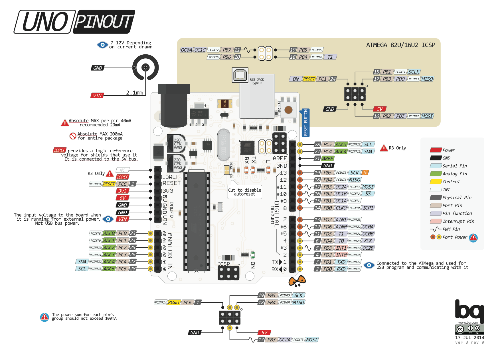

Your UNO board might not look exactly like this, but the pins will be the same.
Along with the description below: source source 2 source 3
Digital pins Use these pins with pinMode(), digitalRead(), digitalWrite(), and analogWrite(). analogWrite() works only on the pins with the PWM symbol. Each pin has an internal pull-up resistor which can be turned on and off using digitalWrite() (w/ a value of HIGH or LOW, respectively) when the pin is configured as an input. The maximum current per pin is 40 mA.
Pin 13 LED The only actuator built-in to your board. Besides being a handy target for your first blink sketch, this LED is very useful for debugging.
Power LED Indicates that your Arduino is receiving power. Useful for debugging.
ATmega microcontroller The heart of your board.
Analog in Use these pins with analogRead().
GND and 5V pins Use these pins to provide +5V power and ground to your circuits.
Power connector This is how you power your Arduino when it's not plugged into a USB port for power. Can accept voltages between 7-12V.
TX and RX LEDs These LEDs indicate communication between your Arduino and your computer. Expect them to flicker rapidly during sketch upload as well as during serial communication. Useful for debugging.
USB port Used for powering your Arduino UNO, uploading your sketches to your Arduino, and for communicating with your Arduino sketch (via Serial. println() etc.).
Reset button Resets the ATmega microcontroller.
+-\/-+
PC6 1| |28 PC5 (AI 5)
(D 0) PD0 2| |27 PC4 (AI 4)
(D 1) PD1 3| |26 PC3 (AI 3)
(D 2) PD2 4| |25 PC2 (AI 2)
PWM+ (D 3) PD3 5| |24 PC1 (AI 1)
(D 4) PD4 6| |23 PC0 (AI 0)
VCC 7| |22 GND
GND 8| |21 AREF
PB6 9| |20 AVCC
PB7 10| |19 PB5 (D 13)
PWM+ (D 5) PD5 11| |18 PB4 (D 12)
PWM+ (D 6) PD6 12| |17 PB3 (D 11) PWM
(D 7) PD7 13| |16 PB2 (D 10) PWM
(D 8) PB0 14| |15 PB1 (D 9) PWM
+----+